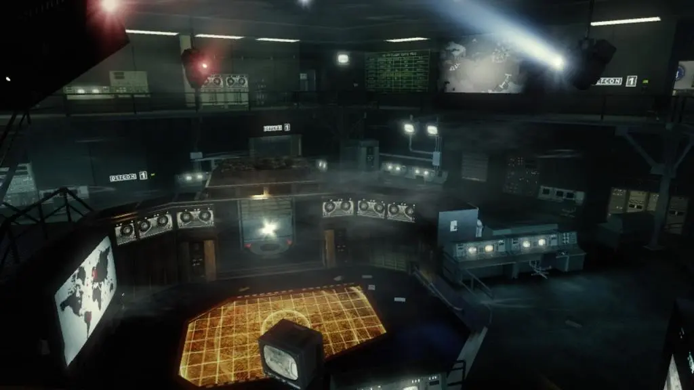

FIVE

"¡Atacan el Pentagono! Washington pasa a DEFON 1 en este episodio de 'Zombis' "
DESCRIPCIÓN
Five es el segundo mapa del modo Zombies de Call of Duty: Black Ops. El mapa es desbloqueado después de terminar la campaña en cualquier nivel o ingresando un código. Tiene lugar en el Pentágono, en Washington D.C., EE.UU.

HABITACIONES:
Sala de Juntas
En esta sala hay 4 ventanas y dos secciones de pared que pueden romperse. Aquí se encuentra la máquina Quick Revive y un teléfono requerido para el Easter Egg musical. Además se encuentra un teletransportador (que solo puede ser activado cuando se encienda la energía), la Olympia, y una M14 disponible para comprar en la pared, ambos por 500 puntos. En el modo de juego solo, el Quick Revive desaparece luego de tres usos, efectivamente dando al jugador cuatro "vidas” mientras que el jugador siga retornando a la máquina. Cuando la energía es encendida, la habitación se vuelve muy oscura y las luces parpadean o se oscurecen. De los 6 puntos de entrada de los Zombies, solo 4 son usados, pero cuando la electricidad se enciende estos cambian. En esta sala hay una de dos trampas, que pueden ser accesibles después de encontrar el mecanismo para operarlas, que está en la habitación con el Bowie Knife y usando este en el medio del detector de metal, la trampa puede ser activada por 1000 puntos.
Vestubulo
Hay dos puertas que llevan a este lugar, ambas se abren cuando una es comprada. Aquí hay dos ventanas y dos secciones de pared que pueden romperse. Además contiene el primer ascensor que lleva al jugador a la Sala de Guerra y tiene la máquina de Speed Cola y el arma MPL, que puede ser comprado por 1000 puntos. Aquí está la segunda trampa que, como la primera, el mecanismo para operarla debe ser encontrado.
1er Asensor
Para acceder, se debe remover la barricada que lo bloquea (con un coste de 1000 puntos). Usarlo tiene un coste de 250 puntos, y aunque unos pocos zombies entren en el ascensor puede ser devastador.
Sala de Guerra
Esta es la sala más grande del mapa, separada en diferentes secciones. El primer ascensor lleva al jugador al segundo piso de la Sala de Guerra que contiene cuatro ventanas, una MP5K y una PM63 (1000 puntos cada una) y la máquina Double Tap Root Beer. El jugador debe comprar luego el acceso a la planta baja de la Sala de Guerra por 1000 puntos. Este piso está dividido por dos barricadas que deben ser desbloqueadas por 1250 puntos cada una. Además contiene las máquinas Jugger-Nog y Mule Kick; y un Stakeout (1500 puntos). El segundo ascensor lleva el jugador al Laboratorio. Esta sala está conectada al Búnker, para acceder a este hay 4 interruptores que deben ser accionados para bajar el nivel de DEFCON de 1 a 5, al llegar a DEFCON 5 todos los teletransportadores llevan a la habitación con la máquina Pack-A-Punch o la Habitación del Pánico.

2do Asensor
Este ascensor es mucho más grande que el primero y tiene una ventana en cada nivel haciendo que quedarse en el elevador sea mucho más difícil. Este elevador, como el primero, tiene un costo de uso de 250 puntos.
Laboratorio
Este lugar está hecho de pasillos y habitaciones y puede ser accedido a través del segundo ascensor. Aquí está el interruptor para encender la electricidad y un teléfono que es requerido por el Easter Egg musical. Una vez que el Laboratorio es accedido, van a aparecer múltiples Zombies crawler (sólo mientras el jugador está en el Laboratorio), los teletransportadores y el Perk-A-Cola van a ser activados, el nivel de DEFCON puede ser cambiado, y el acceso al Búnker es posible. En este lugar además hay muchos teletransportadores, el M16 y la AK-74u (1200 puntos cada uno).
Sala de Experimentacion
En esta sala anteriormente se hicieron experimentos, se puede ver un cerdo vivo que está colgado que puede ser matado y algunos cuerpos humanos, muy similar a los sujetos de prueba del proyecto Nova 6 en “Rebirth”. Aquí se pueden encontrar Claymores y una Caja Misteriosa. Además contiene dos ventanas y muchas puertas. Como un Easter Egg, uno de los cuerpos es del Sgt. Roebuck de Call of Duty: World at War, posiblemente marcando su final como sujeto de pruebas luego de su muerte.
Sala de Pruebas de Armas
En esta sala se pueden ver una Death Machine, un Winter´s Howl y una Thundergun (todas sin poder ser usadas). Además aquí puede aparecer la Caja misteriosa y se puede conseguir el Bowie Knife. Una de las piezas para las trampas puede ser encontrada en un locker.


Bunker / Habitacion del panico
Solo puede ser accedido después de que la energía es encendida y el nivel DEFCON es bajado a 5. Aquí se encuentra uno de los teléfonos requerido para el Easter Egg musical y la Pack-A-Punch Machine, además de dos ventanas y un teletransportador.